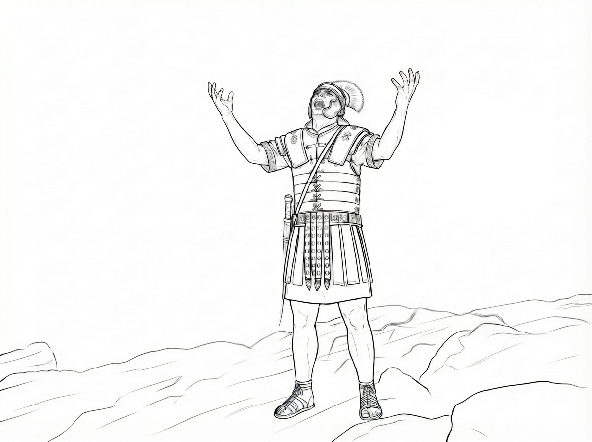

CHAPTER 09 OF 12

Centurion began to look back over his life.
When he was young, he had been chosen to become a Roman soldier because he was taller than most boys his age. He learned quickly and obeyed orders well, so he was soon promoted to an officer. He was also better than most soldiers at reading people and handling difficult situations.
He allowed his soldiers to plunder the people they were supposed to protect, and because of this, he was popular among them. Of course, he required his soldiers to give him a share in return, and over the years he had accumulated considerable wealth.
But now, Centurion was filled with grief. He hated himself. Why had he not ordered the soldiers to stop when they were crucifying Jesus?
He despised the cowardice that had held him back.
He had seen the evil within his own heart. He had seen the deceit and wickedness hidden within the human heart.
A terrible realization took hold of him. The evil within his own heart was not his alone. It was the evil of humanity— the evil passed down from generation to generation, from the beginning, through his own time, and into generations yet to come.
What frightened him even more was that this evil seemed to have no end. He thought bitterly:
“God can judge the evil of humanity, but it seems He cannot change the evil within us, nor the suffering and misery that evil has brought upon the world.”
Questions churned within Centurion’s mind.
How can we escape the judgment that is to come?
What can change the miserable fate of humanity?
In the marketplace, Peter stood up and called out to the great crowd:
“Men of Israel, and all who dwell in Jerusalem!”
Centurion was patrolling around the edge of the crowd, but his ears were listening carefully to every word that came from Peter’s mouth.
Peter cried out:
“Jesus was delivered up according to the definite plan and foreknowledge of God. You, by the hands of lawless men, put Him to death by nailing Him to the cross.”
Centurion felt a sharp pain in his heart.
For he and his soldiers had been the very hands that nailed the Lord Jesus to the cross.
Peter continued, speaking boldly to the people.
He proclaimed:
“God raised Jesus from the dead and released Him from the agony of death.”
“The foreknowledge of God.”
Those words seized Centurion’s heart.
He thought:
“Could it be that even our killing of Jesus was known beforehand by God?”
He remembered something he had once heard Jesus teach:
“For God so loved the world that He gave His only Son, that whoever believes in Him should not perish but have eternal life.”
The knot in Centurion’s heart began, slowly, to loosen. Those words were beginning to make sense.
“Who is this Son?” Centurion asked himself.
“Jesus.” He answered himself.
“Why did Jesus have to be killed?”
“He gave His only Son.” Again, he answered himself.
“And what was the purpose?”
“That whoever believes in Him should not perish but have eternal life.”
For the first time, Centurion could see a way out of humanity’s miserable fate. He whispered:
“No evil hand can escape eternal judgment.”
“The weight of sin is too heavy for a person to carry alone.”
“If a sinful man cannot even bear the weight of his own sin, how could he bear the judgment meant for another?”
“But God can.”
“He freely gave His Son to redeem humanity.”
“Jesus is not only my Teacher. He is the Son of God.”
“Only the innocent Son could bear such a burden.”
“This is the greatest gift God has ever given to humanity.”
“He is changing the destiny of mankind.”
Peter continued to call boldly for the people to repent. A great crowd was cut to the heart by his words. They received his message, repented, and turned back to God.
Centurion took off his Roman helmet and breastplate.
He fell to his knees and cried out:
“Lord Jesus, save me!”
He decided that he would no longer be a soldier. Several soldiers realized that he had deserted and began pursuing him. He fled into the forest.
But for Centurion, that day was a day of victory. His courage had overcome his fear. Deep in the forest, he lifted his voice and rejoiced.
I watched from the top of a tree as Centurion disappeared into the forest. I also watched Peter and the great crowd gathered around him. The eagle eyes my Golden Eagle teacher had taught me to use allowed me to see what others could not. A great white cloud called Redemption rested above them. They breathed it in like green shoots drinking in the morning dew. They drew in the fresh air of that cloud, breath after breath.
The pale faces of the people began to regain their color. Their chests filled with breath. Their weak legs grew strong again, and they stood firmly upon the ground.
I remembered the question Centurion had once asked. What can a person live by? Now I knew the answer.
A person does not live by his own strength.
A person lives by redemption.
Fly over and answer five questions about "Centurion's Change" to earn stars!
Fly to get stars